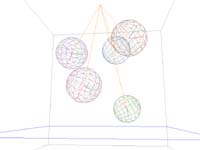
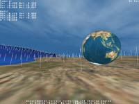
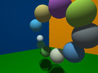
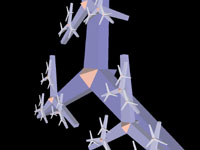
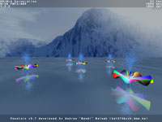
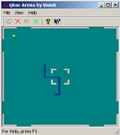

last updated: 09/30/2003
|
|
Ranger Mk. II. last updated: 09/30/2003 |
This technology demo renders vast landscapes with an incredible amount of detail in real-time. The accurate per pixel shading of the terrain ensures that you can see every little feature of the surface, even at extreme distances!
|  |
simple physics simulation last updated: 05/22/2002 exec (18K) |
Little physics demo featuring collision detection and response, water and springs. There is no friction, nor resting contact. The graphics is quite lame, because it had to work on old machines. Usage: use the arrows + w, a, s, d for camera movement enter: pause/start r: spring on off +/-: adjust water level 1, 2, 3: load preset scenes
|  |
Ranger: terrain rendering and physics simulation last updated: 12/13/2001 executable (950K) source (33K) |
Experimental stuff, download at your own risk! ;)
|  |
raytracer last updated: 01/28/2002 executable (8K) source (7K) readme (0.2K) |
This program uses raytracing to render a very simple scene consisting of some moving balls in a box. The demo runs at interactive rates, although it is very unoptimized! (It needs DirectX7 and a 32bit desktop)
|  |
windmill last updated: 08/27/2000 exec (822K) source (24K) |
This little program renders a recursive windmill-like-thingy... It runs quite fast even without hardware acceleration.
|  |
fountain last updated: 08/27/2000 exec (822K) source (24K) |
I started this project in order to learn the basics of OpenGL. Since this is my first bigger program that uses the OpenGL API for rendering (and in fact my first attempt to do 3D graphics), it's a very simple one. I mean it doesn't contain advanced math or anything... The program uses the GL_EXT_point_parameters extension, so if you have an older accelerator that doesn't support this extension then the program will still work, but the waterdrops will look a little weird.. To compile the source you'll need the GLUT library and the glext.h header file.. If you want to benchmark your system then don't forget to turn off vsync in your driver's settings! Press F1 for help! Hope you like it!
|  |
Qukac Arena last updated: 05/03/2001 exec (20K) |
Qukac Arena is a fast paced, action packed multiplayer game! Enjoy!! Be warned though, this code is extremely incomplete and buggy! I always plan on cleaning it up, just never make it :(
I've got a bunch of very old demos that I made some looong time ago. I've decided I'd put up some of them for fun :) If you're interested in more (or would like to see those ugly x86 asm sources) then contact me!
You might need some of these libraries to run the above programs. The first three will be included in newer versions of Windows (Windows.NET and above), and the last one is only required for some of my old OpenGL demos, like the fountain.